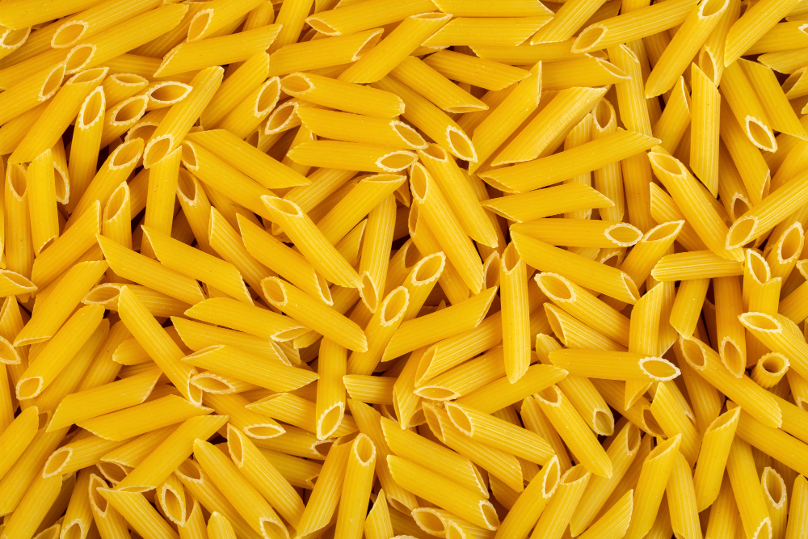

Home
Makaronia du Furnu

Description
Recipe for Gluten Free Makaronia du Furnu
Quick and simple midweek meal. Great accompanied with a salad or a slice or two of garlic bread.
Ingredients
- Gluten Free Pasta
- Preferrably Long Tubes or Penne
- 500g Mince Meat or Substitute
- Teaspoon of Salt
- Favourite Herbs, Spices and Sauces
- Litter of Milk
- Lactose Free Milk if Preferred
- 250g of Preferred Cheese
- Lactose Free Cheese if Preferred
- 50g of Butter
- 50g of Cornflour
- Two Eggs
Steps
- Fry Mince
- Add Herbs and Spices
- Add 150 ml of Water
- Bring to the boil and simmer until thickened
- Add milk and butter to stove
- Slowly bring to simmer
- Dilute Cornflour in 50ml of Cold Milk
- Slowly Add diluted Cornflour to heated milk and slowly stir threw
- Bring to simmer and ensure milk thickened
- Turn off heat and add cheese to milk
- Stir Cheese threw
- Add bitten eggs
- Layer Pasta in Dish
- Add a third of Cheese sauce and Stir threw
- Layer Mince on top of Pasta
- Layer Remaining Cheese Sauce on top
- Cook in Center of Oven for 45 minutes at Gas Mark 5